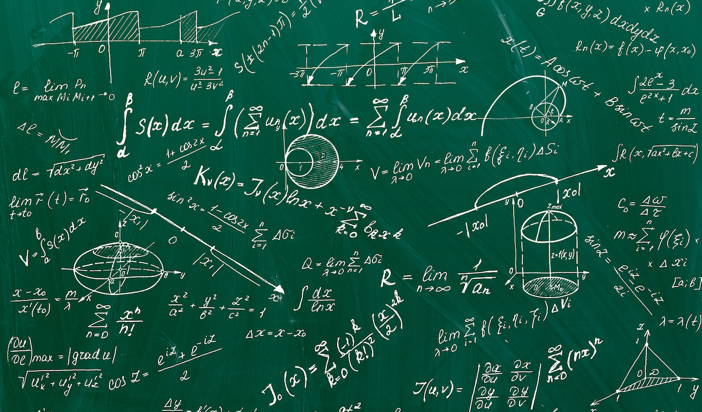

Bienvenue sur le site des Maths en vidéos !
Vous trouverez de nombreuses vidéos sur les différents chapitres abordés dans la formation R&T.
Mais ce n'est pas tout, vous aurez aussi de petits quizz pour vous exercer en dessous de chaque vidéo.
Ce site vous est présenté par BINTI AFANDI Nurul Jasmeen, BINTI ZULKIFLEE Nizreen Ana, BINTI MAT YUSOF Ahda Syathirah et BLANC Lucas.